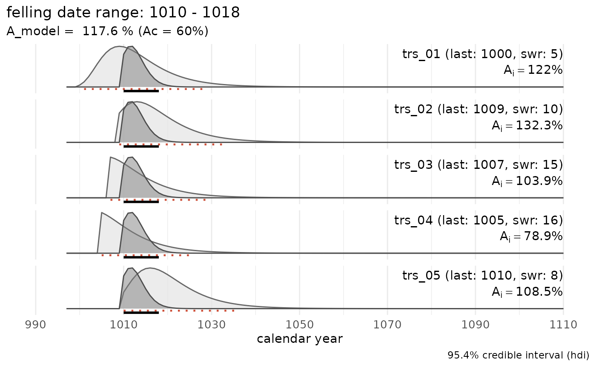
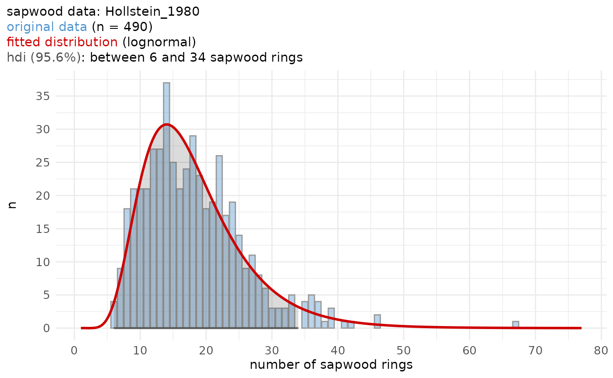
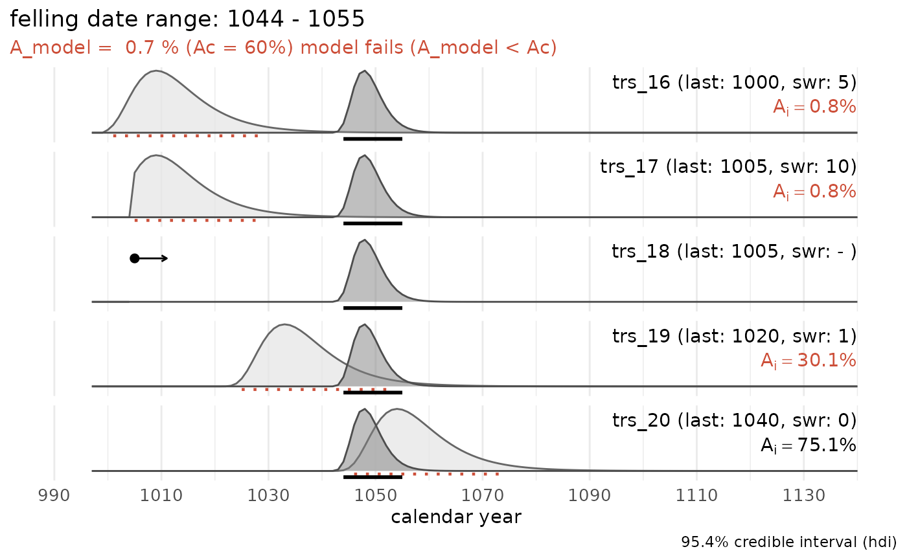
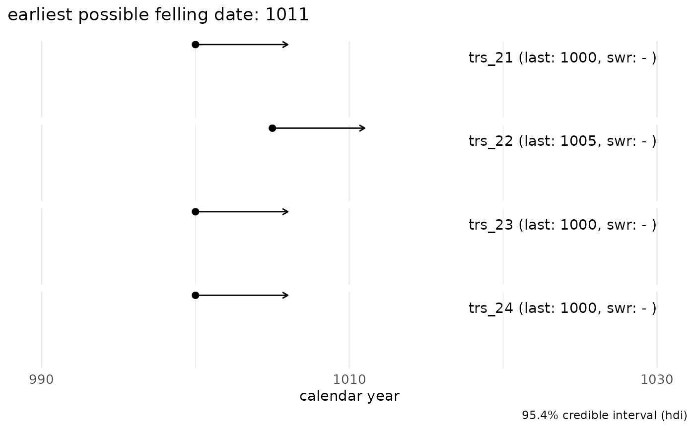
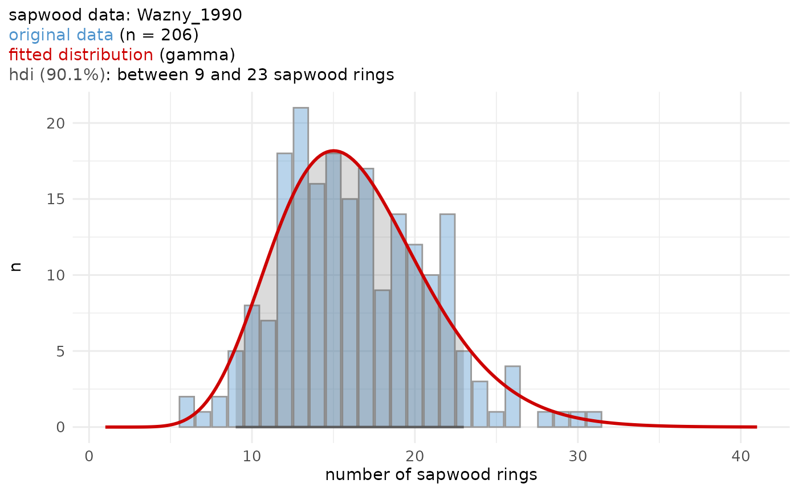

fellingdater: Estimate, report and combine felling
dates of historical tree-ring series
This R-package offers a suite of functions designed to assist you in inferring estimates for felling dates from dated tree-ring series. The presence of (partially) preserved sapwood or waney edge allows on a (pre-)historical timber allows to estimate the missing number of sapwood rings. from this estimate, a range for the actual felling date can be determined and reported, for individual series as well as for a group of related timbers.
In cases where it can be assumed that a group of historical timbers were all felled simultaneously (i.e., in the same year), but due to the absence of the bark/cambial zone (waney edge) and the final formed tree ring, this cannot be determined, the preserved sapwood rings can be used to establish a date range for the felling event.
Taking into account the observed number of sapwood rings across all analysed samples and combining them into a single estimate, a more accurate and precise estimation of the felling date year for the group of timbers under study is likely to be obtained.
This vignette provides a quick overview of the package main functions, including a new tool to sum sapwood probability distributions, comparable to ‘summed probability densities (SPD)’ commonly applied to sets of radiocarbon (14C) dates.
Installation
You can install the development version of fellingdater from GitHub with:
#install.packages("devtools")
devtools::install_github("hanecakr/fellingdater")or
# install.packages("pak")
pak::pak("hanecakr/fellingdater")Basic example
In the following example the combined felling date range for a set of five dated tree-ring series is computed:
## a data set where all series have partially preserved sapwood:
sw_combine(trs_example1, plot = TRUE)
The light grey distributions represent the probability density function of the felling date range for each individual series. The dark grey distribution is the combined estimate for a common felling date.
The sapwood data used in the example above to estimate the felling date range, was published by Hollstein (1980) :
sw_model("Hollstein_1980", plot = TRUE)
Main functions
sw_interval
This function calculates the probability density function (PDF) and the highest probability density interval (HDI) for the range of potential felling dates, based on the observed number of sapwood rings, their chronological dating and the selected sapwood data and model.
In the example below, we observe 10 sapwood rings on a sample (with the last ring dated to 1234 AD) that originates from the Southern Baltic region. The sapwood model published by Wazny, 1990 covers this provenance region. The hdi delineates an interval in which the actual felling date is most likely situated. It represents the shortest interval within a probability distribution for a given probability mass or credible interval. The HDI summarizes the distribution by specifying an interval that spans most of the distribution, typically 95%, such that every point inside the interval has higher credibility than any point outside the interval.
sw_interval(n_sapwood = 10,
last = 1234,
hdi = TRUE,
cred_mass = .95,
sw_data = "Wazny_1990",
densfun = "lognormal")
#> lower upper p
#> 1 1234 1250 0.9611793When hdi = FALSE, a matrix is returned with scaled
p-values for each number of observed sapwood rings.
The results of this procedure can be visualized by setting
plot = TRUE.
# 10 sapwood rings observed and the Wazny 1990 sapwood model:
sw_interval(n_sapwood = 10,
last = 1234,
hdi = TRUE,
cred_mass = .95,
sw_data = "Wazny_1990",
densfun = "lognormal",
plot = TRUE)
fd_report
The fd_report()function reports estimates of the felling
date (fd) range for individual series.
tmp <- data.frame(id = c("aaa", "bbb", "ccc"),
swr = c(10, 11, 12),
waneyedge = c(FALSE, FALSE,TRUE),
end = c(123, 456, 1789))
fd_report(tmp,
series = "id",
n_sapwood = "swr",
last = "end",
sw_data = "Wazny_1990")
#> series last n_sapwood waneyedge lower upper felling_date sapwood_model
#> 1 aaa 123 10 FALSE 123 139 between 123 and 139 Wazny_1990
#> 2 bbb 456 11 FALSE 456 471 between 456 and 471 Wazny_1990
#> 3 ccc 1789 12 TRUE NA 1789 in 1789 Wazny_1990sw_combine
The the sw_combine() function combines felling dates of
a group of related series with (partially) preserved sapwood, in order
to narrow down the range of a common felling date. The function returns
a list with:
the PDF for the felling date of the individual series and the PDF of the model that combines these individual series (
$dataRaw),the HDI for the combined estimate of the common felling date (
$hdi_model),the Agreement index (
$A_comb) of the model, expressing how well the individual series fit into the model (ideally around 100%, and not lower than the critical threshold A_c = 60%) ,an overview of the felling date range for the individual series (
$individual_series), and their Agreement index (A_i) to the combined model.
trs_example0
A data set with dated tree-ring series, all with partially preserved
sapwood. The names of the variables in the data set are mapped to the
parameters of the sw_combine() function. In the example
below, the numeric output is returned:
trs_example0
#> trs end swr bark
#> 1 trs_01 1000 5 FALSE
#> 2 trs_02 1009 10 FALSE
#> 3 trs_03 1007 15 FALSE
#> 4 trs_04 1005 16 FALSE
#> 5 trs_05 1010 8 FALSE
# In trs_example0, the column names are not equivalent to the default names in `sw_combine()`.
output_comb <- sw_combine(trs_example0,
series = "trs",
last = "end",
n_sapwood = "swr",
waneyedge = "bark",
cred_mass = .954,
plot = FALSE
)
head(output_comb$rawData, 20)
#> NULL
output_comb[-1]
#> $sapwood_data
#> [1] "Hollstein_1980"
#>
#> $sapwood_model
#> [1] "lognormal"
#>
#> $cred_mass
#> [1] 0.954
#>
#> $hdi_model
#> lower upper p
#> 1 6 34 0.9561277
#>
#> $hdi_combine
#> lower upper p
#> 1 1010 1018 0.9741642
#>
#> $individual_series
#> series last n_sapwood waneyedge lower upper agr_index
#> 1 trs_01 1000 5 FALSE 1001 1029 122.0
#> 2 trs_02 1009 10 FALSE 1009 1033 132.3
#> 3 trs_03 1007 15 FALSE 1007 1029 103.9
#> 4 trs_04 1005 16 FALSE 1005 1026 78.9
#> 5 trs_05 1010 8 FALSE 1010 1036 108.5
#>
#> $A_model
#> Overall agreement index (%)
#> 117.6
#>
#> $A_c
#> Critical threshold (%)
#> 60
#>
#> $model_summary
#> [1] "felling date range: 1010 - 1018"trs_example2
A data set with 5 tree-ring series, one of which has an exact felling date (waney edge present):
trs_example2
#> series last n_sapwood waneyedge
#> 1 trs_06 1000 5 FALSE
#> 2 trs_07 1005 10 FALSE
#> 3 trs_08 1008 NA FALSE
#> 4 trs_09 1000 1 FALSE
#> 5 trs_10 1010 15 TRUE
sw_combine(trs_example2, plot = TRUE)
trs_example3
A data set where all tree-ring series have been measured up to the waney edge:
sw_combine(trs_example3, plot = TRUE)
trs_example4
An attempt to compute a common felling date for a group of tree-ring series, all including partially preserved sapwood:
sw_combine(trs_example4, plot = TRUE)
No common felling date can be computed for this particular data set. The model fails (agreement index of the model is below the critical threshold value (A_c) of 60%). Three series have an individual agreement index below 60%.
trs_example5
When no sapwood rings are observed and measured, only an
earliest possible felling date (terminus post
quem) can be determined:
sw_combine(trs_example5, plot = TRUE)
sw_sum
The sw_sum() function calculates the the summed
probability density (SPD) for a set of felling date ranges. In the
example, the SPD for a set of 9 series with partially preserved sapwood
or waney edge is computed and plotted. A smoother for the SPD is plotted
as well. The dots represent exact felling dates (i.e., series with waney
edge).
spd7 <- sw_sum(trs_example7, plot = FALSE)
#> Warning in sw_sum(trs_example7, plot = FALSE): --> 1 series without sapwood rings or waney edge detected
#> and removed from the data set
sw_sum_plot(spd7, window_smooth = 5, bar_col = "#95d5b2", trend_col = "#dda15e", dot_col = "forestgreen", dot_shape = 23, dot_size = 4)
Helper functions
sw_data_overview
The function sw_data_overview() provides an overview of
all published sapwood data sets distributed with this package.
sw_data_overview()
#> [1] "Brathen_1982" "Hollstein_1980" "Miles_1997_NM" "Miles_1997_SC"
#> [5] "Miles_1997_WBC" "Pilcher_1987" "Sohar_2012_ELL_c" "Sohar_2012_ELL_t"
#> [9] "Sohar_2012_FWE_c" "Sohar_2012_FWE_t" "Wazny_1990" "vanDaalen_NLBE"
#> [13] "vanDaalen_Norway"Load the original data with, for example,
get("Hollstein_1980").
sw_data_info
More information on one of the sapwood data sets - how to cite the
data set, the geographical area the data represents, the number of
observations and some basic summary stats - can be retrieved by using
the sw_data_info() function.
sw_data_info("Pilcher_1987")
#> $data
#> [1] "Pilcher_1987"
#>
#> $citation
#> [1] "Pilcher J.R. 1987. A 700 year dating chronology for northern France. Applications of tree-ring studies. Current research in dendrochronology and related subjects. BAR International Series 333, 127–139."
#>
#> $area
#> [1] "Northern France"
#>
#> $n_observations
#> [1] 116
#>
#> $summary_raw_data
#> Min. 1st Qu. Median Mean 3rd Qu. Max.
#> 12.00 22.00 26.00 26.72 31.00 49.00sw_model and sw_model_plot()
A graphical representation of a sapwood data set is provided by the
sw_model_plot() function.
tmp <- sw_model(sw_data = "Sohar_2012_ELL_c",
densfun = "lognormal",
cred_mass = 0.95,
plot = FALSE)
sw_model_plot(tmp,
bar_fill = "steelblue3",
bar_color = "grey60",
line_color = "red3")
sw_data_info("Sohar_2012_ELL_c")
#> $data
#> [1] "Sohar_2012_ELL_c"
#>
#> $citation
#> [1] "Sohar K., Vitas A. & Läänelaid A. 2012. Sapwood estimates of pedunculate oak (Quercus robur L.) in eastern Baltic, Dendrochronologia 30.1, 49–56. DOI: https://doi.org/10.1016/j.dendro.2011.08.001"
#>
#> $area
#> [1] "Eastern Estonia, Latvia, Lithuania (sapwood determined by color)."
#>
#> $n_observations
#> [1] 562
#>
#> $summary_raw_data
#> Min. 1st Qu. Median Mean 3rd Qu. Max.
#> 2.00 10.00 12.00 11.69 13.00 27.00The sw_model() function fits a distribution to a data
set of observed sapwood numbers and computes the highest posterior
density interval (HDI) for a given credibility mass. The density
function fitted to the sapwood data set should be one of:
- “lognormal” (the default value),
- “normal”,
- “weibull”,
- “gamma”.
The credible interval should be a value between 0 and 1.
sw_model("Wazny_1990", densfun = "gamma", cred_mass= .90, plot = TRUE)
#> Warning in densfun(x, parm[1], parm[2], ...): NaNs produced
When plot = FALSE, a list with the numeric output of the
modelling process is returned.
read_fh and get_header
The read_fh() function is an extension to the
dplR::read.fh() function from the dplR
package (Bunn 2008, Bunn 2010, Bunn et al. 2022).
It allows to read .fh (format Heidelberg) files of ring widths AND
additional information found in the HEADER fields are listed as
attributes.
This function also works with ring-width data in CHRONO and HALF-CHRONO format.
Furthermore, the read_fh() function is case
insensitive.
In the example below, an .fh file with dated tree-ring series from a
medieval ship DOEL1 is read with read_fh(). The ring width
measurement, in different formats, are converted to a
data.frame.
Doel1 <- system.file("extdata", "DOEL1.fh", package = "fellingdater")
Doel1_trs <- read_fh(Doel1, verbose = FALSE)
head(Doel1_trs, 15)
#> K1_091 S38-BB GD3-1BB GR1mBB GQ1mBB K1_095 GG1-1BB S13mSB S13A-BB S6-SB
#> 1150 NA NA NA NA 3.80 NA NA NA NA NA
#> 1151 NA NA NA NA 4.15 NA NA NA NA NA
#> 1152 NA NA NA NA 4.63 NA NA NA NA NA
#> 1153 NA NA NA NA 4.31 NA NA NA NA NA
#> 1154 NA NA NA NA 3.97 NA NA NA NA NA
#> 1155 NA NA NA NA 4.10 NA NA NA NA NA
#> 1156 NA NA NA NA 2.02 NA NA NA NA NA
#> 1157 NA NA NA NA 3.24 NA NA NA NA NA
#> 1158 2.50 NA NA NA 3.75 NA NA NA NA NA
#> 1159 2.73 NA NA NA 3.07 NA NA NA NA NA
#> 1160 2.27 NA NA NA 4.19 NA NA NA NA NA
#> 1161 1.44 NA NA NA 3.74 NA NA NA NA NA
#> 1162 1.47 NA NA NA 4.54 NA NA NA NA NA
#> 1163 2.29 NA NA NA 4.61 NA NA NA NA NA
#> 1164 2.83 NA NA NA 3.91 NA NA 1.84 NA NAWhen header = TRUE, the get_header()
function is triggered and HEADER fields in the .fh file are returned as
a data.frame, instead of the ring-width measurements.
read_fh(Doel1, verbose = FALSE, header = TRUE)
#> series data_type chrono_members species first last length n_sapwood
#> 1 K1_091 Single <NA> QUSP 1158 1292 135 15
#> 2 S38-BB Single <NA> QUSP 1193 1306 114 0
#> 3 GD3-1BB Single <NA> QUSP 1222 1310 89 5
#> 4 GR1mBB Quadro K1_001,K1_004x,GR1-3BB QUSP 1220 1310 91 3
#> 5 GQ1mBB Quadro GQ1-2BB,K1_007,K1_009 QUSP 1150 1314 165 7
#> 6 K1_095 Single <NA> QUSP 1207 1320 114 21
#> 7 GG1-1BB Single <NA> QUSP 1240 1322 83 13
#> 8 S13mSB Quadro S1-3SB,K1_076 QUSP 1164 1322 159 20
#> 9 S13A-BB Single <NA> QUSP 1232 1324 93 19
#> 10 S6-SB Single <NA> QUSP 1221 1324 104 14
#> n_sapwood_chr unmeasured_rings invalid_rings status waneyedge bark pith
#> 1 <NA> NA NA Dated <NA> <NA> -
#> 2 <NA> NA NA Dated <NA> <NA> -
#> 3 <NA> NA NA Dated <NA> <NA> -
#> 4 <NA> NA NA Dated --- - -
#> 5 <NA> NA NA Dated --- - -
#> 6 <NA> NA NA Dated <NA> - -
#> 7 <NA> NA NA Dated <NA> <NA> <NA>
#> 8 <NA> NA NA Dated --- <NA> -
#> 9 <NA> NA 1 Dated WKE <NA> <NA>
#> 10 <NA> NA 1 Dated WKE <NA> <NA>
#> pith_offset pith_offset_delta comments
#> 1 NA NA keelplank
#> 2 NA NA HW/SW boundary | K1_281 | framing timber
#> 3 NA NA K1_370 | hull plank
#> 4 NA NA hull plank
#> 5 NA NA hull plank
#> 6 NA NA inner stem
#> 7 NA NA hull plank
#> 8 NA NA average of S1-3SB,K1_076 | framing timber
#> 9 NA NA framing timber
#> 10 NA NA framing timber
#> project location town zip street
#> 1 Ship timbers DOEL 1 Doel_Deurganckdok <NA> <NA> <NA>
#> 2 Ship timbers DOEL 1 Doel_Deurganckdok <NA> <NA> <NA>
#> 3 Ship timbers DOEL 1 Doel_Deurganckdok <NA> <NA> <NA>
#> 4 Ship timbers DOEL 1 Doel_Deurganckdok Doel <NA> Deurganckdok
#> 5 Ship timbers DOEL 1 Doel_Deurganckdok Doel <NA> Deurganckdok
#> 6 Ship timbers DOEL 1 Doel_Deurganckdok Doel <NA> Deurganckdok
#> 7 <NA> KOGGE ANTWERPEN GG1-1BB <NA> <NA> <NA>
#> 8 Ship timbers DOEL 1 Doel_Deurganckdok <NA> <NA> <NA>
#> 9 Ship timbers DOEL 1 Doel_Deurganckdok <NA> <NA> <NA>
#> 10 <NA> KOGGE ANTWERPEN S6-SB <NA> <NA> <NA>
#> sampling_date measuring_date personal_id client_id longitude latitude
#> 1 <NA> <NA> KH <NA> 4.269711 51.298236
#> 2 <NA> <NA> KH <NA> 4.269711 51.298236
#> 3 <NA> <NA> KH <NA> 4.269711 51.298236
#> 4 <NA> <NA> KH <NA> 4.269711 51.298236
#> 5 <NA> <NA> KH <NA> 4.269711 51.298236
#> 6 <NA> <NA> KH <NA> 4.269711 51.298236
#> 7 <NA> <NA> <NA> <NA> 4.269711 51.298236
#> 8 <NA> <NA> KH <NA> 4.269711 51.298236
#> 9 <NA> <NA> <NA> <NA> 4.269711 51.298236
#> 10 <NA> <NA> <NA> <NA> 4.269711 51.298236The data.frame with the HEADER fields can then be used
as input for the sw_functions:
Doel1_header <- read_fh(Doel1, verbose = FALSE, header = TRUE)
Doel1_header |>
# first convert column 'waneyedge' to a logical vector
# (in the original .fh file header fields the presence of waney edge is
# indicated by "WK" - a character string - in the corresponding HEADER field)
dplyr::mutate(waneyedge = dplyr::if_else(grepl("wk", waneyedge, ignore.case = TRUE),
TRUE, FALSE)
) |>
sw_combine(plot = TRUE)
The attempt to combine the dated tree-ring series from DOEL1 into a single felling-date range fails. These tree-ring series cannot represent a single event.
However, leaving out the tree-ring series of the keelplank (series “K1_091”) of this medieval ship shows that the hull planking and some frame elements could share a common felling date:
Doel1_header |>
dplyr::mutate(waneyedge = dplyr::if_else(grepl("wk", waneyedge, ignore.case = TRUE),
TRUE, FALSE)
) |>
dplyr::filter(series != "K1_091") |>
sw_combine(plot = TRUE)
For more details see: Haneca & Daly (2014)
cor_table
The cor_table() function computes common correlation
values between dated tree-ring series (x) and a set of reference
chronologies (y). This function assists in checking the end date of the
series against absolutely dated reference chronologies, but also to
select the most appropriate sapwood model for your data according to the
provenance of the wood (by running it against chronologies that
represent a geographically confined region).
The correlation values computed are:
glk: ‘Gleichläufigkeit’ or ‘percentage of parallel variation’ (Buras & Wilmking 2015; Eckstein & Bauch 1969; Huber 1943; Visser 2020)
glk_p: significance level associated with the glk-value (Jansma 1995)
r_pearson: the Pearson’s correlation coefficient
t_St: Student’s t-value
t_BP: t-values according to the Baillie & Pilcher (1973) algorithm
t_Ho: t-values according to the Hollstein (1980) algorithm
Doel1 <- system.file("extdata", "DOEL1.fh", package = "fellingdater")
Doel1_trs <- read_fh(Doel1, verbose = FALSE)
# crossdating ring-width series from Doel 1 against each other:
cor_results <- cor_table(Doel1_trs, output = "table", min_overlap = 80)
head(cor_results, 20)
#> series length first last reference ref_first ref_last overlap glk
#> 29 GD3-1BB 89 1222 1310 GQ1mBB 1150 1314 89 52.8
#> 73 GD3-1BB 89 1222 1310 S13mSB 1164 1322 89 48.9
#> 91 GD3-1BB 89 1222 1310 S6-SB 1221 1324 89 54.5
#> 58 GD3-1BB 89 1222 1310 K1_095 1207 1320 89 51.7
#> 31 GD3-1BB 89 1222 1310 GR1mBB 1220 1310 89 47.2
#> 87 GD3-1BB 89 1222 1310 S38-BB 1193 1306 85 54.2
#> 75 GG1-1BB 83 1240 1322 S13mSB 1164 1322 83 59.8
#> 69 GG1-1BB 83 1240 1322 S13A-BB 1232 1324 83 55.5
#> 59 GG1-1BB 83 1240 1322 K1_095 1207 1320 81 50.6
#> 98 GG1-1BB 83 1240 1322 S6-SB 1221 1324 83 47.0
#> 33 GQ1mBB 165 1150 1314 GR1mBB 1220 1310 91 76.7
#> 76 GQ1mBB 165 1150 1314 S13mSB 1164 1322 151 59.0
#> 60 GQ1mBB 165 1150 1314 K1_095 1207 1320 108 56.1
#> 47 GQ1mBB 165 1150 1314 K1_091 1158 1292 135 60.1
#> 62 GQ1mBB 165 1150 1314 S13A-BB 1232 1324 83 54.9
#> 89 GQ1mBB 165 1150 1314 S38-BB 1193 1306 114 49.6
#> 95 GQ1mBB 165 1150 1314 S6-SB 1221 1324 94 54.3
#> 77 GR1mBB 91 1220 1310 S13mSB 1164 1322 91 65.0
#> 51 GR1mBB 91 1220 1310 K1_095 1207 1320 91 60.0
#> 92 GR1mBB 91 1220 1310 S6-SB 1221 1324 90 55.6
#> glk_p r_pearson t_St t_BP t_Ho
#> 29 5.919436e-01 -0.249779208 -2.40605037 2.11 2.74
#> 73 1.169772e+00 0.201284974 1.91669069 1.48 1.97
#> 91 3.910942e-01 0.035883266 0.33491251 2.16 1.92
#> 58 7.477459e-01 0.258187935 2.49273359 0.78 1.71
#> 31 1.408056e+00 -0.370271866 -3.71792327 0.78 1.18
#> 87 4.423117e-01 0.426532081 4.29630804 0.20 0.00
#> 75 7.546208e-02 -0.005084336 -0.04575962 2.28 2.93
#> 69 3.173465e-01 0.217882020 2.00920920 1.06 2.06
#> 59 9.104270e-01 0.597953189 6.63071551 0.09 1.07
#> 98 1.421457e+00 -0.137136419 -1.24599977 0.27 0.78
#> 33 3.624784e-07 0.727924641 10.01554116 12.23 10.41
#> 76 2.697516e-02 0.572471464 8.52261829 5.84 5.40
#> 60 2.067270e-01 -0.282768827 -3.03515368 3.52 3.02
#> 47 1.922538e-02 0.151940473 1.77284639 2.28 2.67
#> 62 3.740983e-01 -0.041724848 -0.37585094 2.19 2.48
#> 89 1.075278e+00 -0.178020527 -1.91457410 2.74 2.34
#> 95 4.042757e-01 0.078494804 0.75522595 1.09 1.16
#> 77 4.212192e-03 0.182334033 1.74946269 4.02 4.24
#> 51 5.640693e-02 -0.248806924 -2.42344980 3.38 3.50
#> 92 2.864524e-01 0.286284295 2.80290094 0.80 0.91